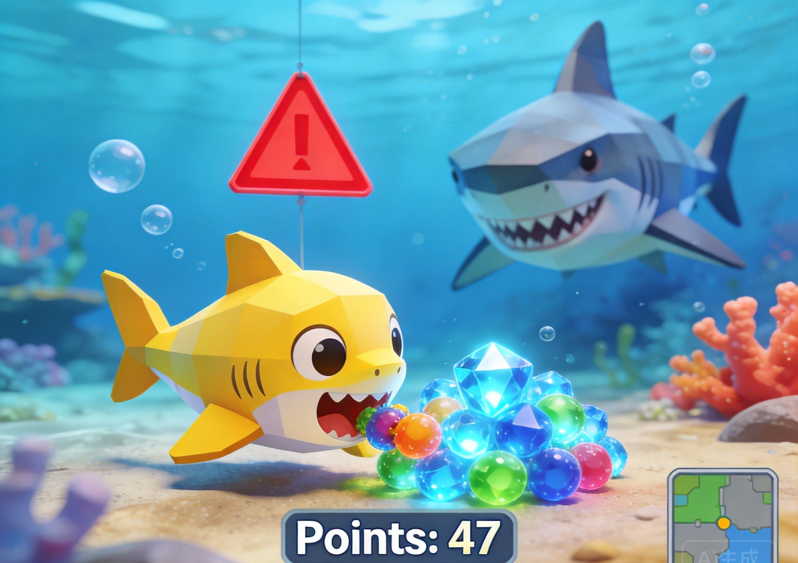
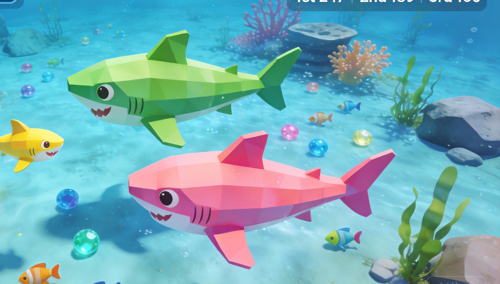
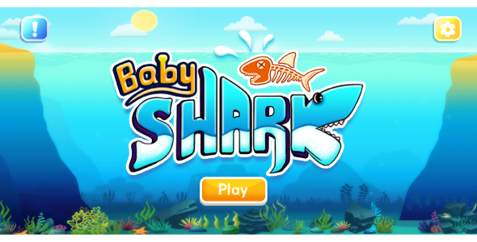

Introduction
BabyShark.io is a vibrant, browser-based multiplayer survival game that puts a playful twist on the classic eat-and-grow formula. You control a tiny yellow shark navigating a crowded, bubbling reef, tasked with gobbling smaller fish to grow while dodging larger, hungry predators. What makes this game unique is its bright, noisy ocean aesthetic combined with intense survival pressure. Players love it because it perfectly balances casual, family-friendly visuals with the high-stakes tension of leaderboard climbing. Every glowing ocean current and darting fish cluster presents a new opportunity or threat. Whether you have a few minutes for a quick round or want to push for the top spot, the simple yet punishing mechanics ensure that every safe bite feels like a massive victory in this underwater arena.
Getting Started

Starting your journey in BabyShark.io is incredibly simple, as it runs directly in your web browser on both desktop and mobile without any downloads required. Upon loading the game, you spawn as a tiny baby shark in a bustling, crowded coral reef. Use your mouse or touchscreen to steer your shark, aiming to consume the smaller fish swimming around you. Your primary mechanic is size-based survival: eating smaller fish increases your mass and score, while touching anything larger than you results in instant death. In your first few minutes, focus entirely on open water and isolated small fish. Avoid the center of the reef where larger predators congregate. Learn to recognize the glowing ocean currents, which can quickly carry you toward easy food or directly into a predator's jaws. Take your time to learn the map layout before rushing into the center. Remember that your initial small size allows you to slip through narrow coral lanes, giving you a distinct agility advantage over the massive sharks dominating the open ocean.
Basic Tips
To survive your first few runs in BabyShark.io, keep these essential beginner tips in mind. First, always prioritize safety over greedy bites; if a food cluster is guarded by a larger shark, circle wide and wait for the predator to turn before swooping in. Second, never trail a bigger shark just because it is near food, as a sudden turn will instantly end your run and destroy your score. Third, utilize the glowing ocean currents to your advantage, but only when you are absolutely certain they lead to open water and not a hidden trap. Fourth, sweep around the edges of dense food clusters rather than cutting straight through the middle, which often hides larger rivals. Finally, remember that size dictates your danger level; always keep your escape lanes clear before committing to a risky chase, and never corner yourself against the reef walls where your turning radius is severely limited.
Advanced Strategies

Once you master basic survival, advanced strategies will help you climb the leaderboard. First, use the reef's narrow coral lanes as a shield. As you grow, you become a bigger target, but you can still outmaneuver larger predators by luring them toward tight spaces where their massive size becomes a disadvantage. Second, practice the "edge-sweep and cut-in" technique. Instead of rushing the center of a fish school, graze the perimeter to steadily gain mass, then dart inward only when the reef temporarily clears. Third, manage your growth pacing carefully. Growing too fast makes you a target for mid-tier sharks, so sometimes it is smarter to ignore a large cluster if a massive predator is nearby. Fourth, use ocean currents strategically for rapid escapes or to ambush smaller players who are caught off guard by the sudden speed boost, turning the environment into your ultimate weapon. This environmental awareness is crucial for maintaining your momentum without risking an early death.
Pro Tips

Expert players separate themselves by mastering map awareness and psychological baiting. First, always track the shadows of larger predators on the periphery of your vision; a near miss can turn into a comeback if you anticipate their patrol routes. Second, use mid-sized rivals as meat shields. If a larger shark is chasing you, position yourself directly behind an equal-sized rival so the predator targets them instead. Third, master the "feint and dart." Pretend to chase a fleeing school of fish to draw out a hiding predator, then immediately reverse direction into a glowing current to escape. Finally, memorize the spawn rates of food clusters to predict where the biggest sharks will migrate, allowing you to safely farm the edges of their feeding grounds.
Conclusion
BabyShark.io offers a thrilling, fast-paced underwater survival experience that is easy to learn but hard to master. With its bright visuals and intense leaderboard competition, every round is a test of patience and reflexes. Dive into the bubbling reef today, avoid the giant jaws, and see how big you can grow!